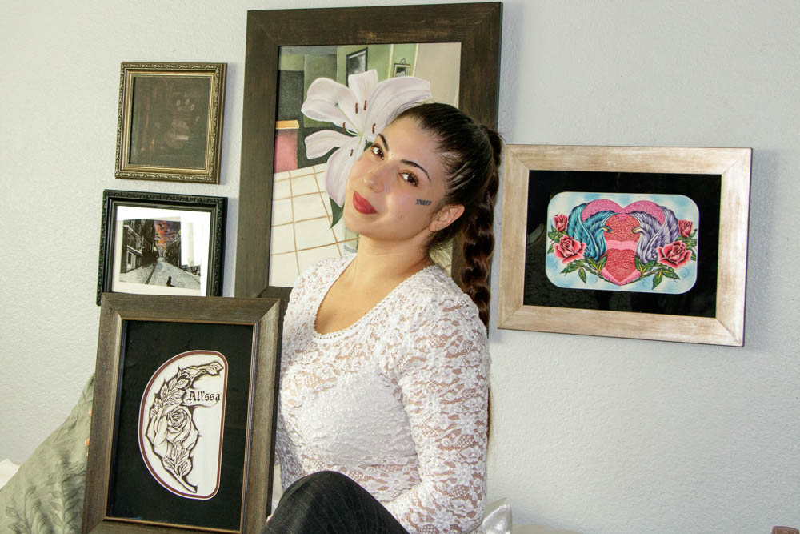

Welcome
Graphic Designer and illustrator creating work centered on environment, growth, and visual storytelling.
About This Site

Featured
This portfolio showcases my work in graphic design, illustration, and environmental storytelling. Through these projects, I explore themes of conservation, growth, and visual communication.
This site shares more about who I am, the kind of work I create, and the projects I continue to develop as a designer and artist.